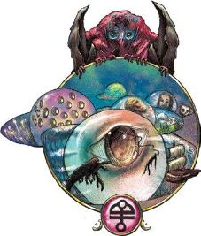

exploring_eberron_p153~155, Ch5, Planes_of_Existence,
Dal Ouor: the Region of Dreams
基于 July
2020. PDF Version: 1.04电子版本
翻译by
Pany_Q
校对by 一个月后的Pany_Q
最后修改于20210520
申明：
1.
关于前朝译名的注释：关于quori及与quori相关的那些种族和组织的译名在3R到5e之间有了较多变化。既然ee这书是5e的，这里优先使用5e的公认译名；但因为个人翻译这些的初衷是给在跑的3R艾伯伦团补充（3R时期并没有说得很全的）位面设定，所以为了我个人的方便就备注上了3R时期的译名。不需要的话无视就可以了。
2.
dreaming dark在 5e有些地方译梦境之暗，3R译黑暗梦境，个人认为前者不够像个反派组织的名字所以继续用黑暗梦境的译名了。
3.
关于地精语的音译和意译，想必看官注意到了，本章地精语的词有的音译,有的意译，没有统一；本人也很为难，如果全意译会体现不出达坎文化的独特感，但如果全音译会让人读起来一头雾水并且永远也记不住这些词；最后决定基本思路是：a)地名和抽象概念用音译，b)组织、职业和魔法物品用意译，c)其实大部分看心情，并对所有这些词在注释中以“[音译][原文]地精语，意为[意译]（，译为[更简短的意译]）”的格式进行说明。

达尔·库尔既遥不可及，又近在咫尺。数万年前，希恩德瑞克(Xen'drik)的巨人打破了达·库尔与物质位面之间的联系。自那时起，达·库尔就一直处于远离的位置，并且艾伯伦的人们再也未发现任何自然产生的连接达·库尔的显能区域。甚至连异界传送(plane shift)或星界旅行也不能直接接触到梦境异界。然而，达·库尔也是最近在身边的位面——只要闭上眼睛，你就能造访。做梦是一种令凡人意识被吸引到达·库尔的精神旅行的形式。
达·库尔是梦的国度，是想象之境，是记忆和情感可塑造现实之地。瑟兰尼斯(Thelanis)的故事将人们汇聚在一个共同的传说中；达·库尔与此截然不同，因为梦是属于个人的、独特且转瞬即逝的体验。梦由我们的经历和欲望决定，当梦结束时我们很少记得梦的内容。梦使得我们能够游历自己的潜意识，梦只属于我们自己——或者至少，它们本应该是......如果没有被外部力量所操纵的话。达·库尔的居民反映了这个位面的第二个主题，这个主题是——至少现在是——噩梦。梦灵*(quori, 3R译梦族)捕食凡人的梦，他们会扭曲梦境以产生他们所渴望的情感。这并不意味着所有的梦都是噩梦——但是，当有梦灵对你的梦感兴趣时，它通常就会变成噩梦。
达·库尔是一个化不可能为可能的地方，这里的环境瞬息万变。它与奇斯瑞(Kythri)和瑟瑞奥特(Xoriat)的不同之处在于，这些变化来自于做梦者的思想，其中既有来自凡人的潜意识的，也有源自伊尔·拉什塔瓦(il-Lashtavar)的古老梦境本身的。即使当你在探索他人的梦境时，你的欲望和记忆也会对其景观产生影响。《变幻梦境》(The Shifting Dreams)表格提供了一些关于梦境如何变化的点子。
|
d8 |
梦境事件Dream Event |
|
1 |
整个地区都能听到一首熟悉的旋律。请一位玩家描述一下这首曲子。 |
|
2 |
墙上出现一个词。它是一条线索吗，抑或只是一个无解之谜？ |
|
3 |
一位熟悉的NPC登场了——可能是一位深受信赖的盟友，或是一位深恶痛绝的反派。 |
|
4 |
某生物的武器、盔甲或其他装备获得了一种不合理的新外观——也许变成了一根巨大的香蕉。这对它的数据没有影响，该效果在1分钟内结束。 |
|
5 |
某生物现在看起来像个小孩或其他种族的生物。这对他们的能力没有影响，该效果在1分钟内结束。 |
|
6 |
某生物心爱的宠物——也许是他们小时候养的——出现在场景中。 |
|
7 |
天气或一天中的时间发生了戏剧性的、可能是超现实的变化。 |
|
8 |
某生物获得了相当于其正常步行速度的飞行速度。该效果持续1分钟。 |
极端善变(Extremely Morphic)：达·库尔的环境在任何时候都可能发生变化。这些变化通常来自当前做梦者的思维；但DM也可以决定冒险者的思维是否也能对他们当前正在经历的另一个生物的梦境产生影响。
延时幻术(Extended Illusion)：当生物施放持续时间为1分钟或更长的幻术法术时，其持续时间会翻倍。持续时间为24小时或以上的法术不受影响。
时间流逝(Flowing Time)：在达·库尔每流逝10分钟，物质位面只流逝１分钟。若睡眠时间为8小时，一个生物可以在达·库尔度过3天。
达·库尔的诸位层是由做梦的诸意识所塑造的。梦灵相信达·库尔的核心本身就是某个巨大的、古老的精魂的梦，而他们自己也只是梦的一部分。梦灵称其为库尔·塔来(Quor Tarai)——纪元之梦(the Dream of the Age)*。但有一个问题：每个梦都会在做梦者醒来时结束。四万年前，希恩德瑞克的巨人与达·库尔行了一场战争，但现在的梦灵都不记得这场战争或之前发生的任何事情。梦灵认为这是因为当时的那个库尔·塔来已经结束了。达·库尔从梦中醒来，然后又立即回到沉睡中，再次开始做梦......但这次做的是全新的另一个梦，梦中诞生了截然不同的新的梦灵。
*译注：即，达·库尔之心(the heart of Dal Quor)、库尔·塔来(Quor Tarai)和纪元之梦(the Dream of the Age)三个名称是指同一个东西。
库尔·塔来从一个梦到另一个梦的转换被梦灵称为“纪元转变”( the Turning of the Age)。他们不知道这种转变以前发生过多少次，也不知道任何关于上一个纪元的梦灵的情况。但他们相信，库尔·塔来的每次轮回都会有截然不同的主旨。现在的库尔·塔来是伊尔-拉什塔瓦(il-Lashtavar)，即沉梦的伟大之暗(the Great Darkness that Dreams)。其主旨是恶意和残忍，这一点也体现于它所创造的梦灵身上。但是，有一小部分梦灵与这个梦格格不入。这些就是后来成为离梦人(kalashtar, 3R译半梦灵)的梦灵，他们认为自己是纪元转变的先驱。离梦人相信，库尔·塔来的下一次轮回将会带来一个充满希望与慈悲的纪元；他们称之为伊尔-亚纳(il-Yannah)，即伟大之光(the Great Light)。
所以，所有梦灵都知道达·库尔终有一天会从梦中醒来，而当这发生时，所有现存的梦灵都会被摧毁。这正是离梦人与黑暗梦境(Dreaming Dark)之间冲突的根源。离梦人相信他们的虔诚和冥想会慢慢推动纪元之轮转向一个充满光明的梦。相对的，黑暗梦境的特工们相信只要他们能控制足够多的凡人的梦境，他们就能将库尔·塔来永久地锚定在当前的纪元里——正如他们在索隆娜(Sarlona)所做的那样。至于在一个战役过程中，离梦人是否会迎来一个新的纪元，还是黑暗梦境会继续维持现状，则由DM来决定。如果纪元转变发生了，所有现存的梦灵都将被摧毁并重生；没有人知道这将对离梦人造成什么影响，或是像或像兀尔·达坎(Uul Dhakaan)这样的外来造物会变成什么样。
梦灵是伊尔-拉什塔瓦之子，也是达·库尔的本地精魂中数量最多的。但是梦灵并不是做梦者在梦境异界所能遇到的唯一生物。
每时每刻，总有数以百万计的意识在做着梦，每个梦都会在达·库尔创造出一个岛屿。任何会做梦的生物都可以在这个位面上找到——无论是人类、兽人、巨人，或是龙。
极少数做梦者——或是由于训练，或是由于魔法——能够在梦中保持清醒，并能完全控制自己的行动；这些人能够离开自己的梦境，在位面的各梦岛和诸位层之间移动。然而，绝大多数做梦者并非清醒梦者。他们只会受潜意识的驱使，按本能和深层欲望做出反应；他们很可能不会清楚地记得梦中发生的事。无论如何，当做梦者在梦中死亡时，他们就会醒来；然而，这种死亡仍然会产生一些后果，见《艾伯伦：从终末战争中崛起》(ERftLW)第四章的黑暗梦境(The Dreaming Dark) 一节中所述。
当你做梦遇见你的老教官时，它实际上并不是你的老教官，并且它（可能）也不是个梦灵。它只是一个虚构的东西——幻梦像(figment)，是由达·库尔从虚空中显现出的位面显能现象。当你醒来，或者只是离开这个场景，这个显能现象就会消失，被吸收回这个位面的本质中。幻梦像可以是任何东西——你的朋友、那个朋友的僵尸版本、恶魔、龙，重点是，它来自于做梦者本人的思维。当你梦到你的老教官时，后者并不能告诉你一个你不知道的秘密，因为这其实是你的一部分。另一方面，当你身处别人的梦中——或者如果有一个梦灵控制了你的梦——那么这些幻梦像可能让你大吃一惊，因为他们的能力和智慧来自于别人的头脑。
幻梦像可以使用它所显现生物的数据，或者是能力受限的版本——因为做梦者可能并不清楚它到底有什么能力。反过来说，一个幻梦像地精也可能有着食人魔(ogre)的数据——在这个梦里，那是一个特别强悍的地精。
偶尔，某个特殊的幻梦像会进化成漂泊者(drifter)；它变得在离开了创造出它的梦境后仍能继续存在，它不再是单纯的位面显能现象，而是成为了一个有真正自我意识的精魂。这样的幻梦像可能是凡人梦者的有益向导或盟友，也可能成为从一个梦旅行到另一个梦、捕食凡人的恐惧的掠食者。这种拥有自由意志的幻梦像被称为漂泊者。
梦灵(quori, 3R译梦族)本身就是幻梦像——当前的纪元之梦(Dream of the Age)伊尔-拉什塔瓦(il-Lashtavar)的幻梦像。不过，这些幻梦像是不灭的，它们不会在凡人的梦境结束时消失；如果它们被摧毁，它们会在伊尔-拉什塔瓦的中心重生。梦灵同其他幻梦像一样，从存在的那一刻开始，就知晓自己应该扮演的角色：噩梦的塑造者。每一种梦灵都以一种特定的情绪为食；螯爪梦灵(Tsucora Quori, 3R译螯爪灵)会制作可怕的噩梦，以便能够尽情享用凡人的恐惧，而三眼梦灵(du'ulora quori, 3R译三眼灵)则喜爱愤怒的味道。
当梦灵进入一个梦境时，它可以创造新的幻梦像，改变故事的剧本，或者改变自己的外表（其数据保持不变）。如果入侵的梦灵在梦中被杀死，故事就会恢复到原来的剧本，所以大多数梦灵都喜欢躲在幕后中偷偷摸摸地影响梦境；不过，还是有一些忍不住想要扮演主角的傲慢梦灵存在的。并不是每一个噩梦都是梦灵创造的；做梦者数以百万计，而梦灵的数量只有几千。但梦灵亲自创造的噩梦都堪称艺术极品。
在伊尔-拉什塔瓦最初日子里，梦灵们除了掠食凡人的梦境之外，并没有任何其他目的。而现在，梦灵们相信自己在为生存而战，它们利用自身的能力操纵着凡人以及梦醒的世界。不过要时刻记住，梦灵原本是噩梦的塑造者，要考虑每个梦灵所嗜好的情绪会如何影响其行动。
达·库尔的生物中，有些既不是幻梦像，也不是凡人梦者。比如夜鬼婆(night hag)会为了自己的打算收集噩梦，自由来去。以下是另一些外来者(interloper)的例子。
逝梦之塔的精类(The Fey of the Fading Dream)：妖精尖塔(feyspire)提尔·莲·多雷什(Taer Lian Doresh)是瑟兰尼斯的雅灵(eladrin*)都市之一。很久以前，暴君至高天库尔'希尔(the tyrant empyrean Cul'sir)诅咒了这座妖精尖塔，使其落入了达·库尔。这些雅灵们被卷入了库尔·塔来的转变，遂变成了噩梦的化身，他们会为了减轻自身的痛苦而在凡人中传播恐惧。（这些雅灵可以使用影灵的数据，但他们并不是影灵，与杜鲁尔的死者女王也没有任何关系）。
*译注：雅灵eladrin，精灵的一种；3R译爱剌天族，为天界生物。
提尔·莲·多雷什现存在于达·库尔与物质位面的夹缝中。这座妖精尖塔的雅灵们可以自由往来于两个位面，但其他生物只能进到提尔·莲·多蕾什，以及返回他们原本的位面；后者不能把这里当作进入另一个位面的传送门。也就是说，梦灵和冒险者可以一起走在逝梦之塔(the Fading Dream)的厅殿之中，但梦灵不能以实体进入艾伯伦，物质位面的居民（包括其他妖精尖塔的雅灵、人类以及艾伯伦的所有其他生物）也不能进入达·库尔。
龙灵殿的巨龙幻灵*(Draconic Eidolon)：许多阿贡尼森的龙们相信他们可以在死后获得不朽——经过杜鲁尔的升华，最终成为拥有神性的存在。然而，其中有些并不愿意冒任何风险；那些最强大的个体能够利用隐藏在阿贡纳森深处的某台超凡奇械(eldritch machine)进行一种仪式，将自己的灵魂绑定在位于达·库尔的某片精神锚点上。这座位于梦洋(the Ocean of Dreams)的丰碑——龙灵殿(Draconic Eidolon)，容纳着早已死去的龙的灵魂，防止它们被释放到杜鲁尔。这些龙不再具有实体；如同不朽评议会一样(the Undying Court)，他们是精魂的聚合体，当在一起拥有的力量比单独时要更强大。他们不能离开这座幻灵殿堂，但他们拥有渊博的知识——历史的秘密，巨龙预言的洞悉，以及传奇魔法的知识。他们可以提供很多，但冒险者们拥什么亡龙之梦可能想要的东西呢？
*译注：Draconic Eidolon，从前后文来看它有时指位面居民，有时指达·库尔中的一个地点/位层，也许它既是居民又是地点，但是我不知道怎么翻才能同时表达两者，于是它用以表达地点时用“龙灵殿”，用以表达居民时用“巨龙幻灵”。
达·库尔并不像其他位面那样拥有位层。相反，它更像是一片广阔的海洋。当一个凡人做梦时，就会掉进这片海洋中，并创造出一个“岛”：一个由其记忆和欲望塑造出的梦境口袋。当做梦者醒来时，岛就会消失。因此，每时每刻都有着数百万个岛屿存在于达·库尔，但没有一个能持续长久。一个被动的做梦者不能离开自己的岛屿，但一个清醒梦者(lucid dreamer)可以找到方法在梦岛之间旅行。一般来说，这需要传送门，即在当前梦中与目的地有精神联系的门；但接突破梦岛的精神边界也是有可能做到的，比如乘坐梦之船或骑乘想象中的有翼兽飞到另一个岛屿。
这些明灭闪烁的岛屿环绕着这个国度恒定不变的核心——即库尔·塔来的黑暗心脏。除了下述的兀尔·达坎(Uul Dhakaan )和龙灵殿(the Draconic Eidolon)两个例子之外，在梦洋中可能还存在其他永久性的岛屿。是谁创造了这个岛屿，它又是依靠什么得以维持？
一片广阔的精神空间围绕着伊尔-拉什塔瓦，这里是数以百万计的凡人梦境的家园。梦洋中的岛屿从诸如人类和龙这样有灵智的生物的复杂梦境，到想象着追赶一只球的狗的简单梦境，包罗万象。从外面看，这些岛屿就像闪闪发光的气泡，每个做梦者的形象都映在其中。梦泡会松散地根据做梦者的物理位置排列，所以会有一片相连的海域包含位于布鲁兰地区的做梦者，另一片是瑟雷恩，以此类推，还有些区域则包含着目前身处其他位面的做梦者。
几个世纪以来，梦启者(the Inspired)在瑞伊卓尔建立了一套由能够锚定灵能的巨构组成的网络，这种巨构称为罕巴拉尼·阿尔塔斯*(hanbalani altas)。这些巨构使他们能够在广大范围内控制每个人的梦境。梦境通常是为该地区量身定做的，包括当地的新闻和指示。不过，只要他们想，他们甚至可以向整个索隆娜播送同一个梦。从达·库尔看起来，这表现为梦洋中的一个独特区域——一个由数十万个岛屿组成的阵列，梦境气泡排列成完美的对称结构，每个气泡中都映着完全相同的图像。
*译注：罕巴拉尼·阿尔塔斯hanbalani altas，意为“灵魂避难所”（参考先译）。
*译注：兀尔·达坎Uul Dhakaan，地精语，意为“达坎之梦”
贾泽尔·达坎(Jhazaal Dhakaan)通过她传奇般的游吟魔法使得达尔人*(dar)团结了起来。当达尔人做梦时，他们并不会在梦洋中创造各自的岛屿。相反，他们被吸引到一个巨大的、正在进行中的梦境——兀尔·达坎(Uul Dhakaan)，详见第四章所述。兀尔·达坎展示了达坎帝国可能的和应成为的模样的愿景，其中遍布着许多城市和堡垒。在这个巨大的梦境中，除了正在做梦的达尔人的精魂之外，还充斥着无数的幻梦像——既有作为背景的士兵和工匠，也有根据被保存的记忆所再现出的传奇英雄。大多数达尔人不是清醒梦者，他们并不能完全记得他们在兀尔·达坎度过的时间，但梦境依然能够加固达坎式的价值观和传统。如果冒险者想体验达坎帝国在其鼎盛时期的样貌——以及它可能再次成为的样貌——他们可以在这里找到。守梦人**(Chot'uul)的守护者们在梦境中设置了多个哨所，并在首都维持着一座大修道院。编织于梦境中的魔法确保了皇宫中的王座是空的——至少目前是。但是，当达尔人选出一位新的帝王并拥立其坐上物质位面的王座时，这位新王也将出现在兀尔·达坎的王座之上。
*译注：达尔人dar，地精语，意为“人民”。虽然在地精语中的意思是人民，其实际意义要更狭窄；“达尔人”是对达坎的大地精、熊地精和地精三个种族的统称。
所以严格来说，现代达贡的3个地精裔部落（嘉尔达尔、马古鲁尔和达坎后裔）中除了达坎后裔都并不被认可为达尔人。不过在艾伯伦官方小说，Don Bassingthwaite的达坎遗产三部曲中，达贡的爱国者以及驻扎当地的外来使节，甚至部分达坎后裔出于对新兴国度达贡的尊重和爱戴，将“达尔人”用来称呼所有的地精裔。所以宽泛点来说，也可认为“达尔人”这个词等于“地精裔”的更古老、更带有自豪感的说法。
在上面这段中，达尔人应该是狭义的，仅指达坎后裔，因为只有他们还会做兀尔·达坎的梦，其他地精裔见不到达坎之梦。
**译注2：叙特'兀尔chot'uul，地精语，意为“梦境守护者”，译为守梦人；这是一个长期监视并守护兀尔·达坎的修道会组织，该词也用以指代其成员。详见第四章。
伊尔-拉什塔瓦是达·库尔的黑暗核心，是库尔·塔来在当前轮回的化身。这个被梦洋所环绕着的巨大梦境是梦灵的来源和家园。它是噩梦的博览会，是萦绕凡人梦境的恐怖之物的游乐园。在伊尔-拉什塔瓦的边缘，荒废果园中的树上垂挂着尸体。恐怖的灌木迷宫内鲜血从叶尖滴落。虽然这些噩梦的基本形态是稳定的，但它们会汲取附近凡人的精神力量。穿过果园的冒险者会把悬挂着的尸体看成是自己最关心的人，甚至看成他们自己——它们总会变成对每个侵入者来说最令其不安的形象。
穿过这个噩梦的外缘，就能找到黑暗梦境的领袖——百目梦灵(kalaraq quori,3R译梦魇灵)“梦境吞噬者”(the Devourer of Dreams)的巨大堡垒城市。与黑暗梦境的特工以及其他梦启者相连的梦灵们的精魂可以随时回到这里，向“吞噬者”报情况告，以及与其他梦灵协调行动。这里的时间流逝对他们有利，因为在达·库尔经过的一小时在艾伯伦仅仅过去几分钟时间。堡垒本身是不断变化的；它可能一会是由黑色的扭曲树根形成的，一会墙壁都是被血浸透的蜘蛛网。这里的正中心，是一池阴影。当梦灵重生时，新生梦灵在就在这里浮现，而梦境吞噬者也会在这里沉入阴影之池，为了与伟大之暗(the Great Darkness)交流。
伊尔-拉什瓦塔是达·库尔最危险的地方。在任何时候，这里都有数百甚至数千个梦灵。伟大之暗并不直接行动，但它会将环境变幻成侵入者最恐惧的噩梦。做梦者若在这里死亡，就会被困住，效果如同像被百目梦灵用缚魂术囚禁灵魂一般。只有最强大和最准备充分的冒险者才能够进入伊尔-拉什塔瓦。
在伊尔-拉什塔瓦的看似户外的区域，冒险者可能会注意到天空中有一轮幽暗的、几乎不可见的月亮。对历史或奥秘学有相当高水平的贤者可能会认出这是月亮库莱亚(Crya)，一般认为它在巨人时代已被摧毁。或许，库莱亚那时只是被抛进了达·库尔，它还可能以某种方式回归，届时达·库尔也将恢复到原本的轨道上；又或许，这只是伊尔-拉什塔瓦梦中的幻影，真实的月亮已经永远失去了。
自从巨人时代以来，从物质位面与达·库尔进行物理接触就变得几乎不可能了。这迫使与离梦人和梦启者相连的梦灵们只能通过凡人代理者才能在物质位面采取行动。唯一能轻易进入物质位面的达·库尔居民只有逝梦之塔的精类。达·库尔始终处于远离位置；要将其恢复到原来的轨道上将会是一趟史诗级别的任务，这可能会让第十三颗月亮回到天空。不过，即使处于远离状态，达·库尔也依然能影响梦醒的世界。
达·库尔在世界显能的主要方式是通过梦境。关于梦境在战役中可以发挥的作用详见《艾伯伦：从终末战争中崛起》第四章。
达·库尔与希恩德瑞克(Xen'drik)的巨人之间的冲突造成了超越常理的破坏，它切断了艾伯伦与达·库尔之间的联系。因此，艾伯伦不再有任何自然产生的达·库尔显能区域，即使是异界传送(plane shift)也无法令你到达那里。不过，虽然没有自然产生的显能区域，但只要有超凡奇械，一切皆有可能——或许它在隐秘地追求征服世界计划的黑暗梦境手中，或许在单纯地寻求奥术科学进步的奇械师怪人手中。
虽然在艾伯伦很少能遇见来自达·库尔的物品，但索隆娜的梦启者们会使用梦灵的技术创造物品。在创造梦灵物品时，主要使用的是一种被称为“心质”(sentira)的、由凝固的情感形成的物质。心质看起来不透明且拥有一种有机质的质感，类似于打磨过的动物角；其颜色取决于创造过程中所使用的情感，佩戴者可以感觉到这种情感在他们的脑海中作为背景持续存在。作为一种材料，心质很轻，而且非常坚固，类似于秘银；黑暗梦境的特工就可能会穿着由心质制成的护甲，其功能上等同于秘银护甲。梦灵物品通常会增强心灵感应或其他心灵效果；将诸如心灵护盾戒指(Ring of Mind Shielding)或读心水晶球(crystal ball of mind reading)这样的物品设定为梦灵的造物是合理的。
《艾伯伦：从终末战争中崛起》的第4章中提供了一些与梦以及黑暗梦境有关的故事的点子。冒险者也可以使用本书第七章中的梦铸物品*(kra'uul)和引梦钥**(uul'kur,)。
*译注：凯拉'兀尔kra'uul，地精语，意为“梦境铸造”，译为梦铸物品；
**译注：兀尔'库尔uul'kur，地精语，意为“梦境钥匙”，译为引梦钥。
虚幻之友(Familiar Figments, Figment Familiars)：冒险者们发现他们会梦到同一个人物，该人物会定期出现在他们每个人的梦中。它可能是一个人形生物（一个童年的朋友，一位曾经的导师），一只会变身的乌鸦，或一只会说话的紫色的猫。它原先只是他们其中一人的梦中的幻梦像，但后来成为了漂泊者(drifter)，变得能够在梦与梦之间移动。它可以提供建议，在角色互相分开时为他们传递信息，或者当它在冒险者的敌人的梦中看到什么时，向他们发出警告。
诡谲低语(The Treacherous Whisper)：兀尔'达坎中的某座孤立的堡垒已经被异变魔(daelkyr)的诅咒所侵蚀，堡垒中的幻梦像都被变成了异怪(aberration)。在异变魔的诅咒蔓延并摧毁整个梦境之前，能否将其遏制并予以净化？
逝梦之塔(The Fortress of the Fading Dream)：提尔·莲·多雷什位于达·库尔的边缘，那里是凡人和梦灵能够面对面的地方。螯爪梦灵(tsucora)阿斯塔勒斯(Astaleth)最近刚转变向了光之道*(the Path of Light)，她现在躲在塔里；一旦离开，她就会被伊尔-拉什塔瓦(il-Lashtavar)吞噬。冒险者们能找到拯救这位叛逆梦灵的方法吗？领袖山·莲·多雷什(Shan Lian Doresh)为什么允许她在自己的塔中避难？
*译注：光之道the Path of Light，3R译光芒大道